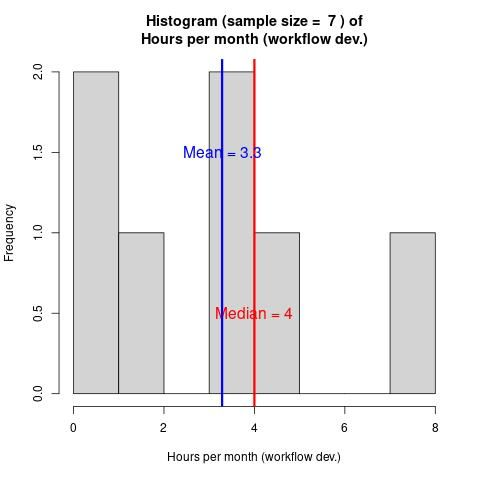
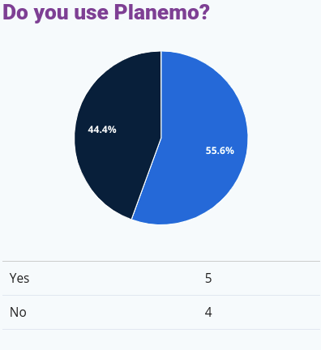
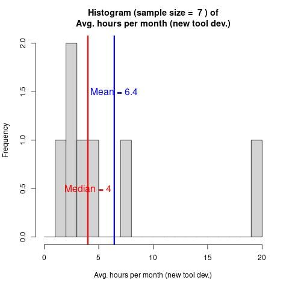
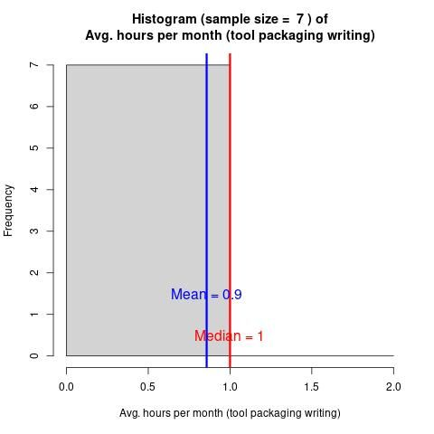
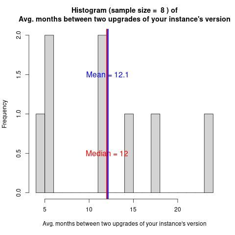

Galaxy Administrator Time Burden and Technology Usage
Contributors
| Author(s) |
|
| Data provider(s) |
|
| Editor(s) |
|
##Context
Context
.center[
- Have you wondered how difficult Galaxy is to run? How much time people must spend to run Galaxy?
- In February 2024, we collected 9 responses from the Galaxy Small Scale Admin group
- Questions about various time burdens and technological choices
- Full version of the report, + form export
- Raw data (anonymised) + analysis script ]
Overview of Participants’ Galaxy Instances’
Active Users
.pull-left[]
.pull-right[
- 3 categories : <10, circa 20 & circa 50
- Active vs signed up: no problem having a lot more signed up than active users, no need to delete inactive users (in case they come back) ]
Computing Method
.pull-left[]
.pull-right[
- Admins generally use a batch scheduler (often HTCondor)
- Some admins use Pulsar to send jobs to remote machines
- And a few use the local scheduler which will not survive a machine restart. ]
Object Store Backend
.pull-left[]
.pull-right[
- Local storage (SSD/HDDs attached to the machine) and NASs are popular options for data storage
- S3 is a less common option amongst small scale admins
- You can use whatever storage you have available ]
Ansible Usage
.pull-left[]
.pull-right[ Is a highly-used (about 80%) tool that, according to the other sections, greatly simplifies admin. ]
Gravity Usage
- Since Galaxy 23.0, Gravity is used to manage Galaxy processes
- If you use Ansible to setup Galaxy, this process is mostly transparent, and you may not know you’re using Gravity
User Support & Training
End-User Support Burden
.pull-left[ ]
]
.pull-right[
- 1 hour per week average end-user support
- Lots of training (though that’s part of the next question)
- Lots of developing &/or debugging users’ tools/workflows for them. ]
User Training Burden
.pull-left[]
.pull-right[
- 1 hour per week average user training
- Usually makes use of existing Galaxy tutorials, sometimes in-person
- The tutorials aren’t always specific enough, requiring some custom Q&A ]
Tool & Workflow Dev & Maintenance
User Tool Dev & Planemo Usage
.pull-left-large[ .image-45[] .image-45[] ]
.pull-right-small[
- Users developing their own tools is rare, and if they do, they rarely use Planemo.
- Tool creation is actually mostly done through copy/pasting XMLs
- Planemo shines when it comes to tool testing, linting and publishing ]
Admin Workflow Dev Burden
.pull-left[]
.pull-right[
- The administrative burden of running Galaxy is highly variable
- On average admins spend 4 hours a month managing Galaxy ]
Admin Tool Dev Planemo
.pull-left[]
.pull-right[
- Many small scale Galaxy admins will find themselves responsible for developing tools
- Amongst tool-developing admins, 5/7 use Planemo
- Planemo is a useful tool for tool testing, linting and publishing tools for your local Galaxy ]
Admin Tool Dev Creation Burden
.pull-left[]
.pull-right[ Small (1 hour per week avg.) amount of tool dev per month. ]
Admin Tool Dev Updating Burden
.pull-left[]
.pull-right[
- Excluding the extreme values, about an hour a month
- I wondered if tools became invalid because of non-backwards-compatible format changes, but that does not seem to be the case ]
##Tool Storage & Packaging
Admin Tool Dev Storage
.pull-left[]
.pull-right[
- Most tools are files on the same machine as Galaxy
- Some tools are used from public toolsheds, none from private ones
- Currently, admins write the tool (managed in git), test & lint it with Planemo, then publish it locally, sometimes versioned (ex: tool_v1.1) ]
Tool Dev Packaging Method
.pull-left[]
.pull-right[ Lots of Conda, a few containers. ]
Tool Dev Packaging Burden
.pull-left[]
.pull-right[
- Admins generally spend very little time managing conda environments in Galaxy.
- Galaxy can automatically create and manage conda environments for every installed tool ]
Database-related Characteristics & Tasks
DB Tech
.pull-left[]
.pull-right[
- It is strongly recommended to use PostgreSQL in production ]
DB Schema Update Frequency
.pull-left[]
.pull-right[
- Happens on average once a year.
- If Galaxy is managed with Ansible, this happens automatically as part of updating Galaxy. ]
DB Schema Update Duration
.pull-left[]
.pull-right[ Is very quick and transparent (assuming Ansible usage) ]
DB Backup Frequency
.pull-left[ ]
]
.pull-right[
- Many admins keep one (point in time) backup per week
- The Ansible role Galaxy uses for Postgres can be used to configure both point in time recovery or WAL backups.
- The general Galaxy DB Admin tutorial covers how to setup backups. ]
Galaxy Version & Upgrades
Current Version & Upgrade Frequency
.pull-left-large[ .image-45[] .image-45[] ]
.pull-right-small[
- Half the respondents are able to continue using a version that is 2-3 years old
- This is not recommended as versions older than a year do not receive security updates
- But most update about once a year ]
Galaxy Upgrades Duration (excluding DB schema migration duration)
.pull-left[]
.pull-right[
- Avg 3 hours, big variance, which doesn’t seem proportional to the amount of users, but rather other factors
- Some updates are very simple, especially if you use Ansible
- Some non-backwards-compatible changes like uWSGI to Gunicorn take longer, but these changes are not a regular occurrence in Galaxy.
- Some admins take longer because of custom plugins (that need to be updated) or test deployment environments that need to be maintained. ]
##Miscellaneous: Restarts, Crashes & Other
Intentional Restarts Frequency
.pull-left[]
.pull-right[
- If you configure Galaxy to use a job scheduler (SLURM, HTCondor, etc), restarts will not interrupt existing jobs.
- Generally admins restart about once a month, in order to apply system updates or reconfigure Galaxy or its tools
- Some Galaxy / tools reconfiguration is possible without restarting ]
Crashes Frequency
.pull-left[]
.pull-right[
- Avg. once every 3-4 months
- Causes: Storage space full, or access rights problems, or very rarely TUS (but a solution was found for this since the poll (see the full report)) ]
Other Recurrent Tasks Duration
.pull-left[]
.pull-right[
- 3h per month avg
- Cleaning “paused” jobs
- Adjusting user quotas & notifying users
- Networking with other admins
- Troubleshooting tools
- Testing new Galaxy versions
- Custom welcome-pages ]
##Take Home
Total Burden, Non-Dev Admin Tasks
.center[
- Per month: circa 15 hours
- Per week: half a working day
- Reasonable amount
- Actually slightly less because there is some overlap in user training between the “End-user support” and “User training” questions ]
Thank you!
This material is the result of a collaborative work. Thanks to the Galaxy Training Network and all the contributors! Tutorial Content is licensed under
Creative Commons Attribution 4.0 International License.
Tutorial Content is licensed under
Creative Commons Attribution 4.0 International License.